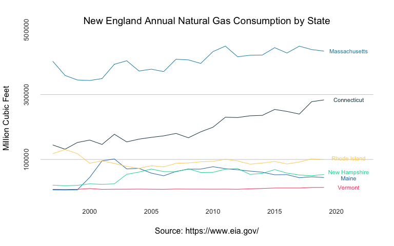

The USgas package provides an overview of demand for natural gas in the US in a time-series format. That includes the following datasets:
-
us_total- The US annual natural gas consumption by state-level between 1997 and 2019, and aggregate level between 1949 and 2019 -
us_monthly- The monthly demand for natural gas in the US between 2001 and 2020 -
us_residential- The US monthly natural gas residential consumption by state and aggregate level between 1989 and 2020
Data source: The US Energy Information Administration API
More information about the package datasets available on this vignette.
Installation
You can install the released version of USgas from CRAN with:
install.packages("USgas")
And the development version from GitHub with:
# install.packages("devtools") devtools::install_github("RamiKrispin/USgas")
Example
Plotting the consumption of natural gas in New England states:
data(us_total) str(us_total) #> 'data.frame': 1265 obs. of 3 variables: #> $ year : int 1997 1998 1999 2000 2001 2002 2003 2004 2005 2006 ... #> $ state: chr "Alabama" "Alabama" "Alabama" "Alabama" ... #> $ y : int 324158 329134 337270 353614 332693 379343 350345 382367 353156 391093 ... head(us_total) #> year state y #> 1 1997 Alabama 324158 #> 2 1998 Alabama 329134 #> 3 1999 Alabama 337270 #> 4 2000 Alabama 353614 #> 5 2001 Alabama 332693 #> 6 2002 Alabama 379343
Subsetting the New England states:
ne <- c("Connecticut", "Maine", "Massachusetts", "New Hampshire", "Rhode Island", "Vermont") ne_gas <- us_total[which(us_total$state %in% ne),] ne_wide <- reshape(ne_gas, v.names = "y", idvar = "year", timevar = "state", direction = "wide") ne_wide <- ne_wide[order(ne_wide$year), ] names(ne_wide) <- c("year",ne) head(ne_wide) #> year Connecticut Maine Massachusetts New Hampshire Rhode Island Vermont #> 139 1997 144708 6290 402629 20848 117707 8061 #> 140 1998 131497 5716 358846 19127 130751 7735 #> 141 1999 152237 6572 344790 20313 118001 8033 #> 142 2000 159712 44779 343314 24950 88419 10426 #> 143 2001 146278 95733 349103 23398 95607 7919 #> 144 2002 177587 101536 393194 24901 87805 8367
Plotting the states series:
# Set the y and x axis ticks at_x <- seq(from = 2000, to = 2020, by = 5) at_y <- pretty(ne_gas$y)[c(2, 4, 6)] # plot the first series plot(ne_wide$year, ne_wide$Connecticut, type = "l", col = "#073b4c", frame.plot = FALSE, axes = FALSE, panel.first = abline(h = c(at_y), col = "grey80"), main = "New England Annual Natural Gas Consumption by State", cex.main = 1.2, font.main = 1, col.main = "black", xlab = "Source: https://www.eia.gov/", font.axis = 1, cex.lab= 1, ylab = "Million Cubic Feet", ylim = c(min(ne_gas$y, na.rm = TRUE), max(ne_gas$y, na.rm = TRUE)), xlim = c(min(ne_gas$year), max(ne_gas$year) + 3)) # Add the 5 other series lines(ne_wide$year, ne_wide$Maine, col = "#1f77b4") lines(ne_wide$year, ne_wide$Massachusetts, col = "#118ab2") lines(ne_wide$year, ne_wide$`New Hampshire`, col = "#06d6a0") lines(ne_wide$year, ne_wide$`Rhode Island`, col = "#ffd166") lines(ne_wide$year, ne_wide$Vermont, col = "#ef476f") # Add the y and x axis ticks mtext(side =1, text = format(at_x, digits=0, nsmall=0), at = at_x, col = "grey20", line = 1, cex = 0.8) mtext(side =2, text = format(at_y, scientific = FALSE), at = at_y, col = "grey20", line = 1, cex = 0.8) # Add text text(max(ne_wide$year) + 2, tail(ne_wide$Connecticut,1), "Connecticut", col = "#073b4c", cex = 0.7) text(max(ne_wide$year) + 2, tail(ne_wide$Maine,1) * 0.95, "Maine", col = "#1f77b4", cex = 0.7) text(max(ne_wide$year) + 2, tail(ne_wide$Massachusetts,1), "Massachusetts", col = "#118ab2", cex = 0.7) text(max(ne_wide$year) + 2, tail(ne_wide$`New Hampshire`,1) * 1.1, "New Hampshire", col = "#06d6a0", cex = 0.7) text(max(ne_wide$year) + 2, tail(ne_wide$`Rhode Island`,1) * 1.05, "Rhode Island", col = "#ffd166", cex = 0.7) text(max(ne_wide$year) + 2, tail(ne_wide$Vermont,1), "Vermont", col = "#ef476f", cex = 0.7)
